Passar a Certificació
Una vegada tenim als participants amb la seua qualificació caldrà passar el curs a Certificació, generar els certificats i l’acta i enviar a signar els certificats (per part del Director del CEFIRE corresponent o Coordinador/a de l'acció formativa i Acta).
Ara, caldrà passar el curs a certificació (anteriorment estaria en avaluació). Per passar a certificació cal anar a eines Estados y Cert. / Pasar a estado de certificación
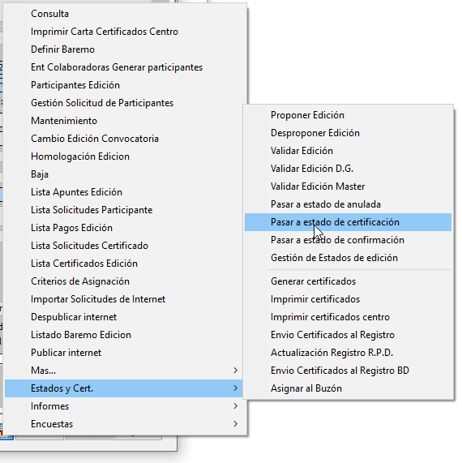
Una vegada està en certificació caldrà generar els certificats. Anem a eines a Estados i Cert / Generar certificados.
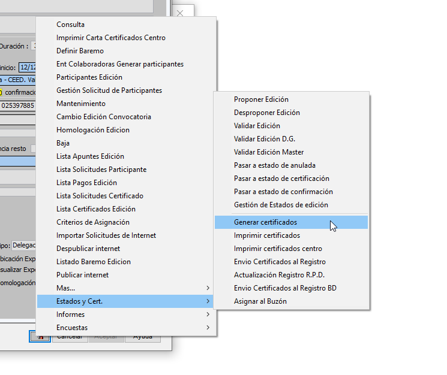
Apareixerà una pestanya que cal acceptar.
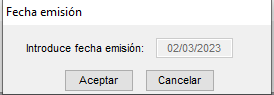
En la següent pantalla revisar que els participants, assistents, ponents o professors i coordinadors tinguin un només, si tenen més d’un cal assegurar-se que no estan marcats en aquests casos certificado no impreso.
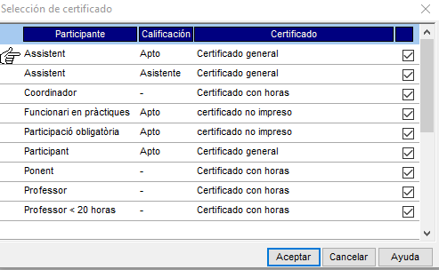
Si es una formació massiva caldrà seleccionar els que es certificaran. Si no és massiva marquem a Selecciona todos.
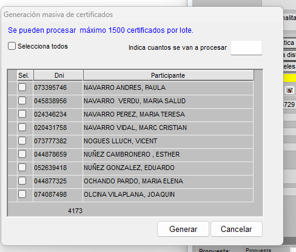
Caldrà indicar quants volem com a màxim 1500. Podem continuar fins a finalitzar els que volem certificar.
Una vegada acceptat i generat els certificats, cal enviar-los a signatura. Cal anar a eines a Lista Certificados Edición
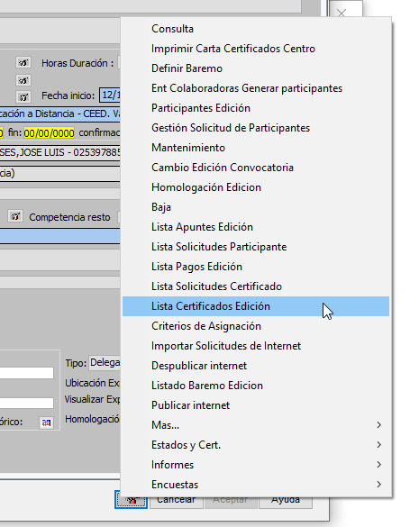
Ens apareixerà una llista amb tots els certificats. Indicacions a tindre en compte:
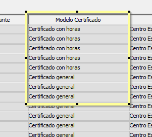 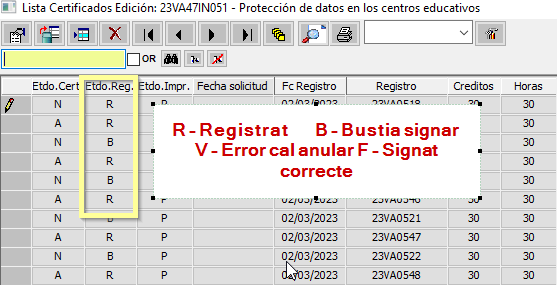
En modelo certificado cal que estigue o certificat amb hores per ponents o certificat general per assistents.
Per tal de generar els certificats filtrem per A (Correcte) per filtrar triem una casella on estigui la A, i anem a la part superior i donem a filtrar.
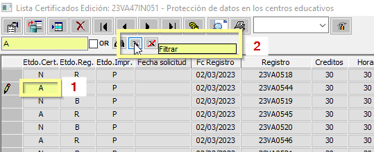
A continuació seleccionem tots (per seleccionar, cal amb la tecla maj polsada clicar al primer i a l’últim registre), si estan seleccionats es posaran en blau.
Anem a la eina i triem Validar y enviar a la firma
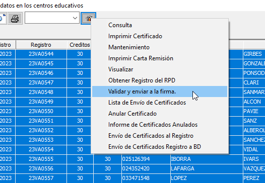
S’obrirà una finestra on està un exemple del certificat generat. Cal comprovar:
- En certificat d’assistent: que estiguin bé els crèdits i les hores.
- En certificat de ponent: que hi hagi el nom de la ponència.
Si tot ok li donem a Validar certificado.
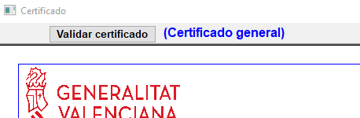
Una vegada validats els certificats comprovar que s’han pujat a signatura de manera correcta. Cal actualitzar i comprovar que ha passat de R a B i posteriorment a F.